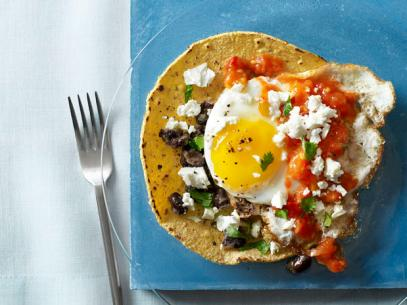

Huevos Rancheros

This is a mexican breakfast dish consisting of fried corn tortillas with sunny side eggs and salsa placed on top.
Ingredients needed for this recipe!
- eggs
- salsa
- corn tortillas
- any oil of your choice
- cheese
Steps
- Heat up any generic pan/skillet/griddle on high heat with light amounts of oil
- Fry 4 corn tortillas by cooking one side, and flipping to the other side until adequately crispy.
- Add a medium amount of oil to the pan, and crack open 3 eggs onto the pan
- Swirl the pan to spread the egg whites, making sure to leave egg yolk intact
- Baste with oil to help cook egg whites on top, season with salt and pepper
- Place eggs on top of fried tortillas
- Add salsa and cheese to the top of egg yolks, mix and enjoy :)